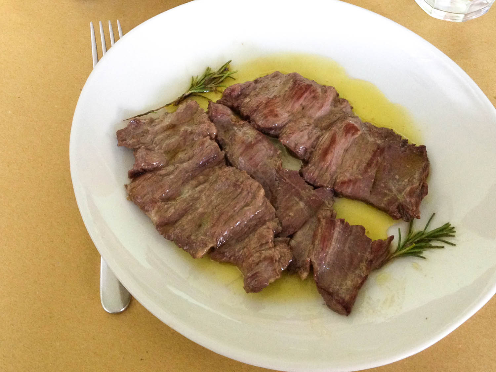

5 Must-Visit Restaurants
Katie Parla is a Rome-based food and beverage journalist. She is the author of the blog Parla Food, the mobile app Katie Parla's Rome, and is working on a cookbook,Really Roman, to be published by Clarkson Potter in Spring 2016. Taking a trip to the city? Let her be your guide.
It takes years to scratch the surface of living and eating in Rome, not to mention the countless strata beneath. But if you only have a few days in the Italian capital and want to eat well, a bit of planning, a bus pass, and a sense of adventure can go a long way to ensuring a delicious trip. While it may be tempting to stick around the big landmarks and eat exclusively in the historical center, the best food in town can actually be found beyond the city's 3rd century Aurelian Walls-that's where the vast majority of Rome dwellers live, eat, and shop for food.
Getting around isn't difficult with a good map (try the offline map available on my app Katie Parla's Rome) and many of my suggestions are easily accessible by bus or tram at the cost of 1.50 pound per person per ride. While there are a few noteworthy restaurants downtown, like Armando al Pantheon which is so close to the Pantheon you'd think it couldn't possibly be great, much less worth the hype (it is), you'll need to leave the traditional tourist map for a true survey of what Rome does best. Here's where to eat:
GOOD FOOD NEAR THE PANTHEON: ARMANDO AL PANTHEON

Considering its location less than half a block from the Pantheon, a major Roman tourist attraction, it's no surprise that Armando al Pantheon books up well in advance. What is shocking and novel is that in a sea of traps, the Gargioli family dedicates every waking hour to serving genuine, thoughtful Roman specialties guided by seasonal, quality ingredients. This has landed Armando al Pantheon in every major travel magazine and guidebook many times over. But the hype is fully deserved.
The simple dishes chef Claudio Gargioli is known for, like spaghetti alla gricia (pasta with cured pork jowl, black pepper and pecorino romano cheese) and spaghetti aglio, olio, e peperoncino (pasta with garlic, oil and chili), are savory and satisfying. In both dishes the ingredients are few, well balanced, and reminiscent of home cooking. The depth of flavor of his coda alla vaccinara (braised oxtail) is unmatched in the city. Book well in advance, order every course, and see why Romans have been infatuated with this institution for over five decades.
SANDWICHES AND MARKET BITES: MORDI E VAI

When the Testaccio Market re-opened in 2012 in a larger, more modern space than its predecessor, it paved the way for the arrival of new small businesses. Though Rome's markets traditionally sell raw ingredients, Mordi e Vai, which occupies a stall in the market's eastern side, serves sandwiches made to order, snacks and prepared foods intended to be eaten on the fly. For around 3 pounds, patrons can have a, homemade-tasting bite prepared by owner Sergio Esposito based on family recipes.
Though sandwiches stuffed with hearty Roman dishes such as braised beef, meatballs, boiled beef, and tripe in tomato sauce are Mordi e Vai's most popular items, don't miss the fried meatballs, which are breaded and fried, then sold by the piece.
A REAL (WALLET-FRIENDLY) OSTERIA: OSTERIA BONELLI
There was a time when the word osteria signified a simple eatery with paper on the tables, a small, seasonal menu, and a single glass for both water in wine. Now the word is trendy and has been co-opted by the city's posh restaurants. But at this busy neighborhood establishment in Tor Pignattara, Osteria Bonelli stays true to its name.
The menu, which is written on folding chalkboards, circulates through the osteria's dining room listing dishes rooted in Roman peasant cooking like horse skirt steak and stewed tripe. On Fridays, expect to find grilled and fried fish specials, while the daily menu features a long list of vegetable side dishes, which Romans believe promotes digestion, a pragmatic approach to a long and meaty meal.
CLASSIC RUSTIC ROMAN: L'ARCANGELO

Arcangelo Dandini is the one of Rome's most beloved chefs, a man who embraces seasonal, traditional recipes of the Italian capital. Though he is not precisely a Rome native-he grew up in Rocca Priora, a town on a hill 15 miles southeast of the city-he cooks Roman classics, as well as the specialities of his home town; due to its distance from Rome and its geography, Rocca Priora's Roman cuisine is not identical to its urban neighbor. His dishes are inspired by time spent in family members' home and restaurant kitchens, but he also seeks to recreate specialties of the Roman Renaissance and even ancient delicacies.

Arcangelo's greatest successes are when he keeps things simple. His potato gnocchi, which are dressed with a light tomato and guanciale (cured pork jowl) sauce, are the absolutely lightest in town, and his stewed tripe simmered with tomato and mint has few rivals, while his braised oxtail is enhanced with a dusting of cocoa. Stick to Arcangelo's classics and be sure to kick off the meal with his suppli', fried rice balls studded with mozzarella and chopped chicken gizzards.
REGIONAL GROCERIES: PRO LOCL DOL

Pro Loco DOL is Rome's most important reference point for local, seasonal products. Vincenzo Mancini, DOL's owner, originally founded his business as a gourmet deli specializing in the cured meats, cheeses, pulses, oils and wines of Lazio, the central Italian region of which Rome is the capital. In a matter of years, his meticulous research and support of local food production has sparked renewed interest in craft goods in the region - often dismissed and overlooked by Italian gourmands, which rank Emilia Romagna, Tuscany, Sicily, and other regions above Lazio in their gastronomic hierarchy.
In December, Mancini's deli moved across the street from its original location and added full meals to its repertoire. In addition to cured meat and cheese plates, diners will find a constantly changing menu of pastas and mains, as well as a selection of pizzas. All ingredients, from the olive oil to the pizza flour, are of regional provenance.